Lecture 3 — Image Morphology
Slides © Dr. Khaled M. ElSayed, Zewail City. 81 slides.
Mathematical morphology is a unified, set-theoretic toolkit for extracting and manipulating shape information in binary images. The two primitive operators are dilation (grow the foreground) and erosion (shrink the foreground). Everything else in this lecture — opening, closing, hit-or-miss, boundary extraction, region filling, connected-component extraction, thinning, thickening, skeletons, pruning — is built out of those two primitives plus simple set operations (union, intersection, complement, difference).
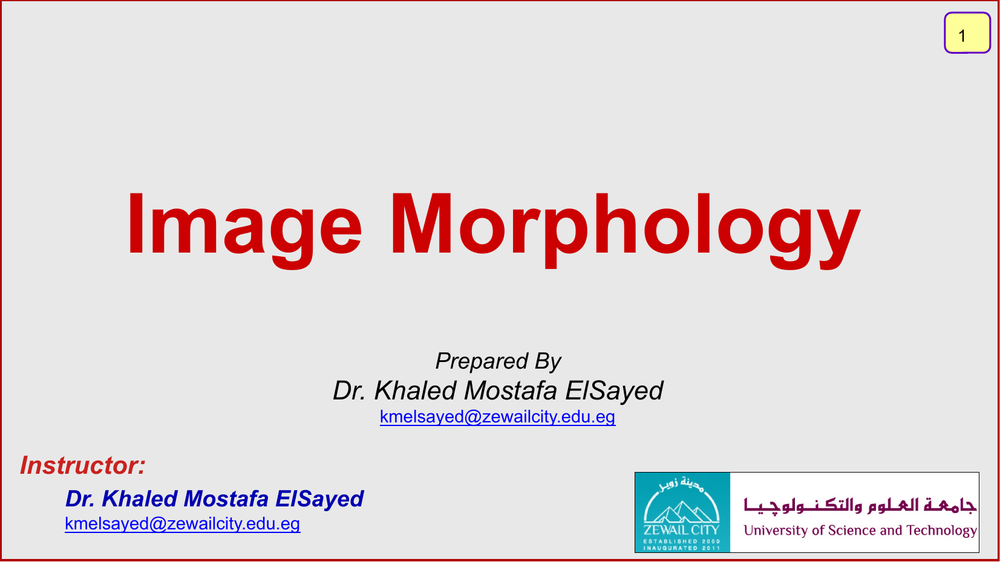
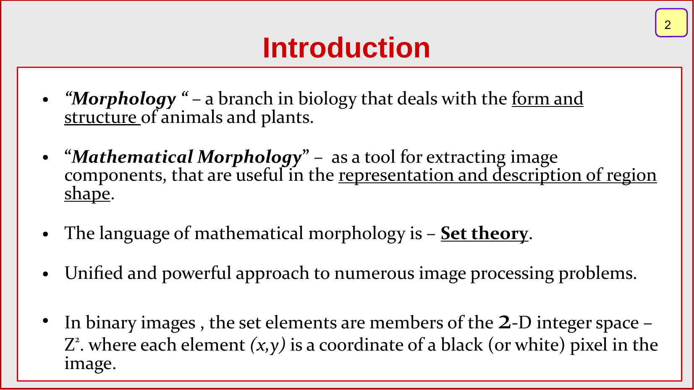
s3.1 — Set theory & logic operations on binary images
A binary image is a set of foreground-pixel coordinates. Every morphological operator is a recipe that combines such sets. Below are the seven set primitives you must know cold, then the four logic operators they correspond to.
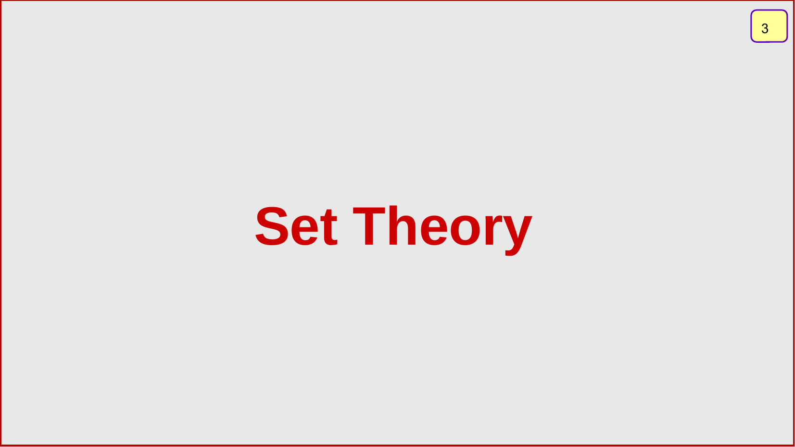
The seven set primitives
Why it matters: every morphological formula is written in this notation. Mis-reading one symbol (e.g. $\hat B$ vs $B$) flips dilation into erosion on the exam.
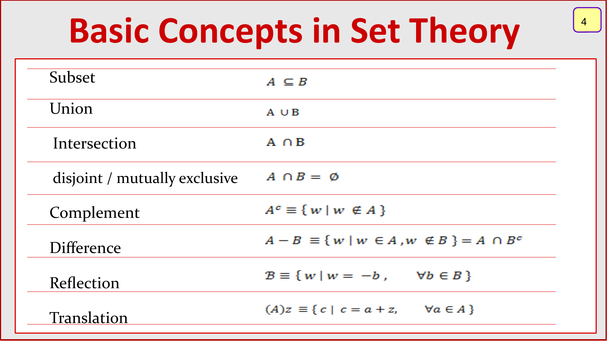
- Subset: $A\subseteq B$ — every pixel of $A$ is also a pixel of $B$.
- Union: $A\cup B$ — the OR of two binary images (any pixel that is foreground in either).
- Intersection: $A\cap B$ — the AND of two binary images (foreground in both).
- Disjoint / mutually exclusive: $A\cap B=\varnothing$ — they share no foreground pixels.
- Complement: $A^c\equiv\{w\mid w\notin A\}$ — the NOT image. Foreground and background swap.
- Difference: $A-B\equiv\{w\mid w\in A,\,w\notin B\}=A\cap B^c$ — keep pixels of $A$ that are not in $B$.
- Reflection of $B$: $\hat B\equiv\{w\mid w=-b,\;\forall b\in B\}$ — flip $B$ through its origin (rotate 180°).
- Translation of $A$ by $z$: $(A)_z\equiv\{c\mid c=a+z,\;\forall a\in A\}$ — slide every pixel of $A$ by the vector $z=(z_1,z_2)$.
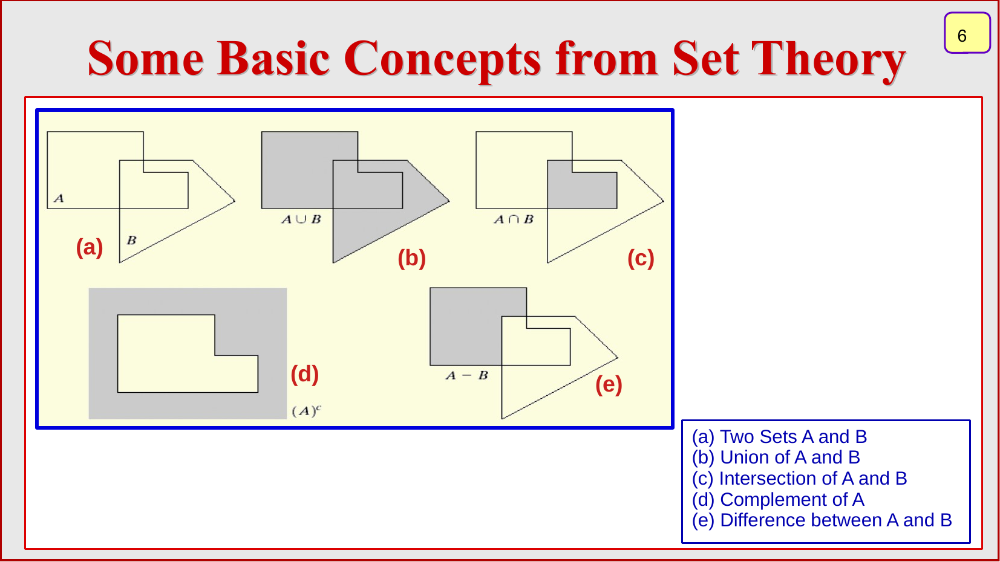
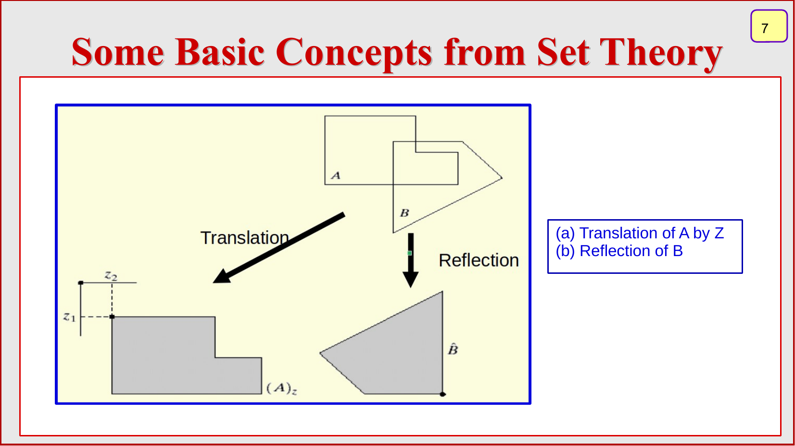
Worked example — translation & reflection on a 5-pixel cross
Let $B=\{(0,0),(1,0),(-1,0),(0,1),(0,-1)\}$ (a 5-pixel plus sign).Reflection: $\hat B=\{(0,0),(-1,0),(1,0),(0,-1),(0,1)\}$ — the plus is symmetric, so $\hat B = B$ in this case.
Translate by $z=(2,3)$: $(B)_z = \{(2,3),(3,3),(1,3),(2,4),(2,2)\}$.
Common exam traps
- The hat in $\hat B$ is reflection through the origin, not a complement. If $B$ is symmetric about its origin (a square, a plus, a disc) then $\hat B=B$.
- "Translation of $A$ by $z$" means add $z$ to every element of $A$; the structuring element is what moves around.
Logic operations on binary images = set operations
Why it matters: on a binary image, AND/OR/NOT are literally the set operations intersection/union/complement applied pixel-wise. This is the bridge between set notation and per-pixel boolean code.
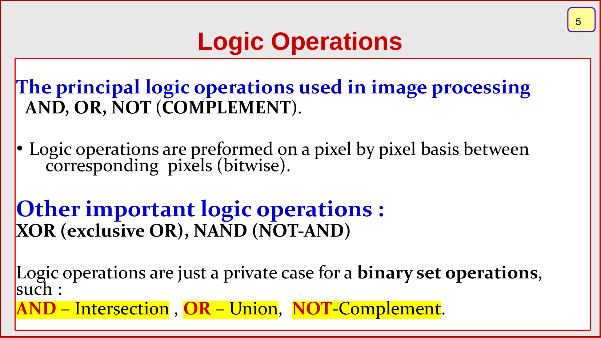
- AND $\equiv$ Intersection $\cap$ — pixel is 1 only if it is 1 in both images.
- OR $\equiv$ Union $\cup$ — pixel is 1 if it is 1 in either image.
- NOT $\equiv$ Complement — foreground becomes background and vice versa.
- XOR = exclusive OR — pixel is 1 only where exactly one image has it. In set form: $(A\cup B)-(A\cap B)$.
- NAND = NOT-AND, used in slide 9 as $\text{NOT}(A)\cap B$ to subtract one shape from another.
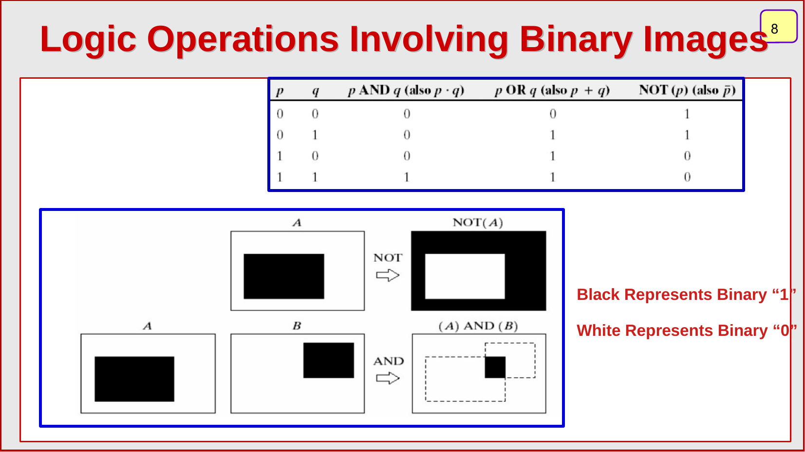
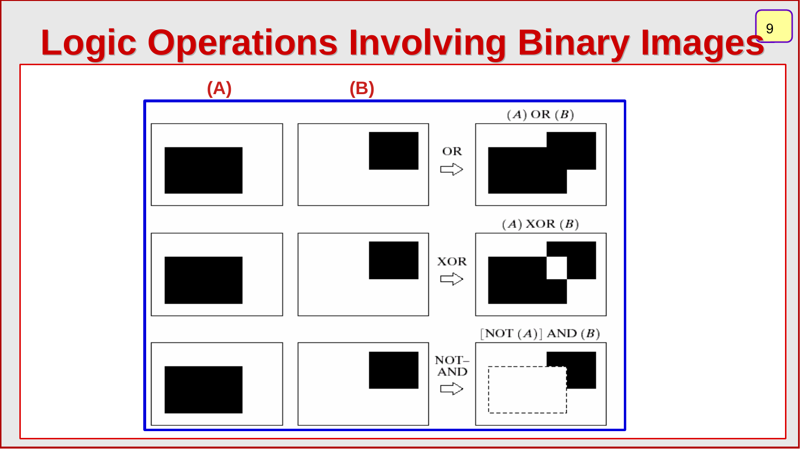
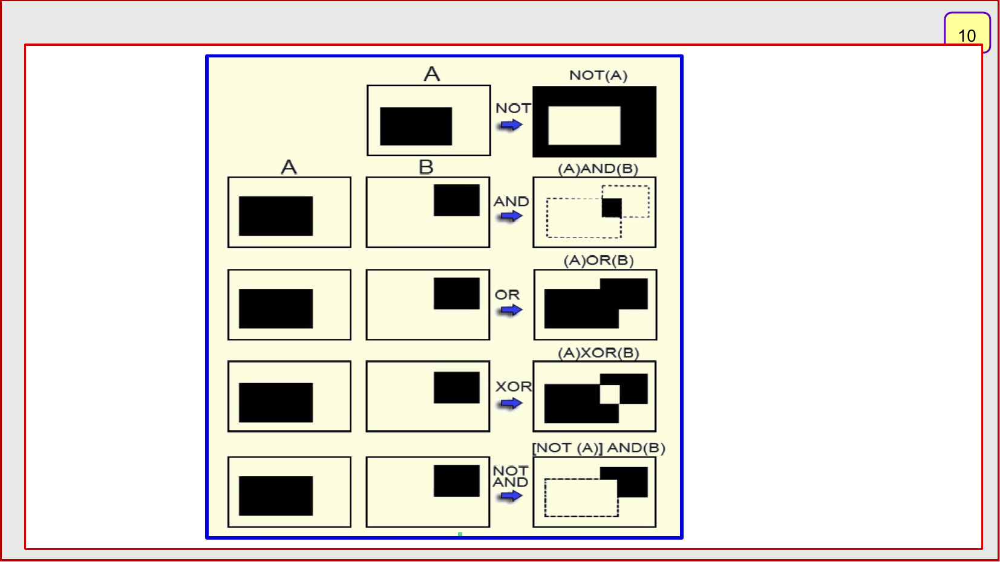
Interpret slide 9 — why is XOR all-black except a small white square?
XOR keeps a pixel only when one of the two images has foreground there and the other does not. The two black rectangles overlap in a small region — there both are "1", so XOR returns 0 (white). Everywhere else only one image is black, so XOR returns 1 (black).Answer
$\text{NOT}(A)\text{ AND }B$, i.e. $A^c\cap B = B-A$.Trap
- The slide deck uses black = 1, white = 0. Many textbooks use the opposite. Always state which convention you assume.
- "NAND" and "NOT-AND" in this lecture do not always mean the same thing — slide 9 actually computes $\text{NOT}(A)\cap B$ (a difference), not the textbook NAND $\overline{A\cdot B}$.
What is a morphological operator?
Why it matters: this is the framing for the rest of the lecture — every operator takes a binary image $A$ and a small structuring element $B$ and returns a new binary image.
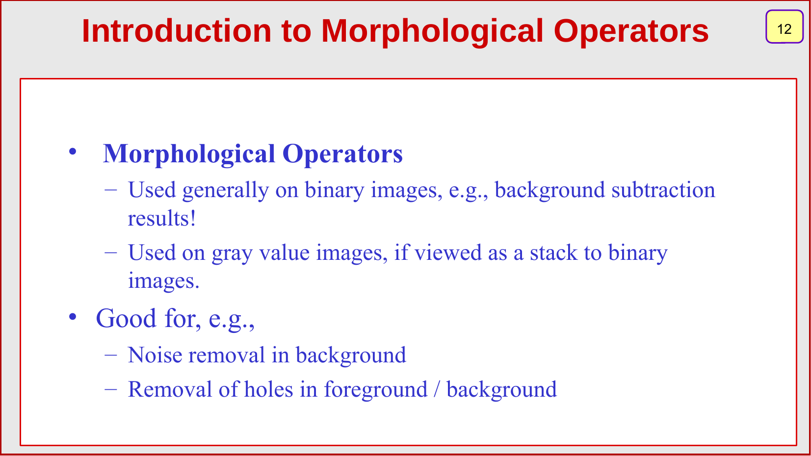
Inputs always: (i) a binary image $A$, (ii) a small structuring element $B$ — a tiny binary template with a marked origin. The SE slides over $A$ and the answer at each location depends on how $B$ overlaps $A$ there.
s3.2 — Dilation $A\oplus B$ and Erosion $A\ominus B$
Dilation and erosion are the two primitive morphological operations. Everything else is built from them.
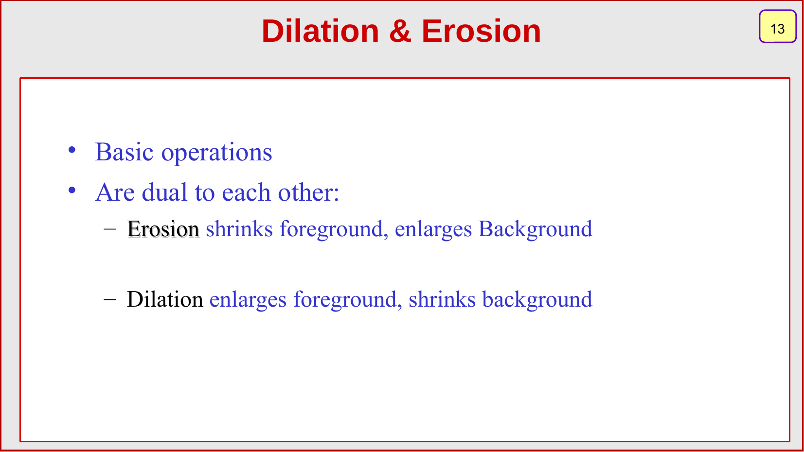
Dilation — "where does the SE touch the foreground?"
Why it matters: dilation is how you grow shapes — fill small gaps, fuse broken letters, thicken thin strokes, bridge across noise.
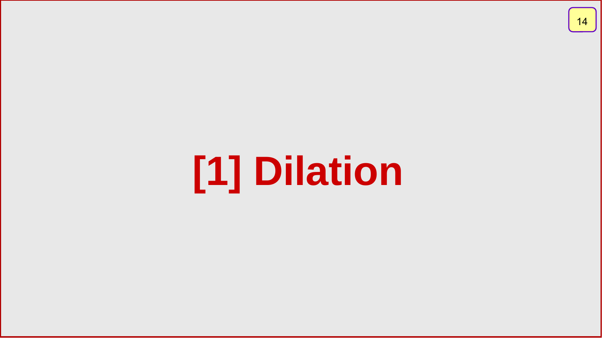
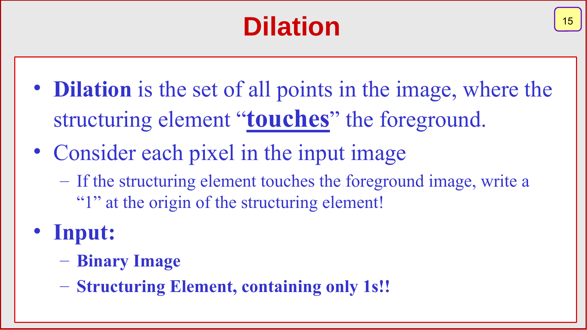
Plain English: place the (reflected) SE at every pixel $z$; if any SE cell hits a foreground pixel of $A$, mark $z$ foreground in the output.
Formula (set-theoretic, slide 16):
$$A\oplus B=\{\,z\;\mid\;(\hat B)_z\cap A\neq\varnothing\,\}$$
Symbols: $A$ = the binary image (a set of foreground pixels). $B$ = the structuring element, a small binary set with a marked origin, containing only 1s. $\hat B$ = reflection of $B$ about its origin. $(\hat B)_z$ = $\hat B$ translated so its origin sits at $z$. $\varnothing$ = the empty set. The braces mean "the set of all $z$ such that…". The condition $(\hat B)_z\cap A\neq\varnothing$ says the reflected SE at position $z$ overlaps $A$ in at least one pixel.
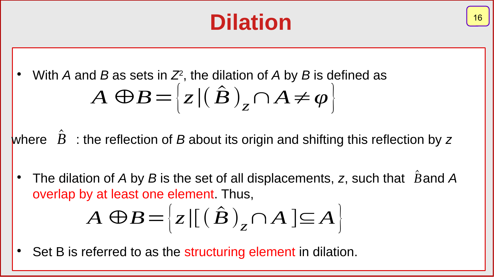
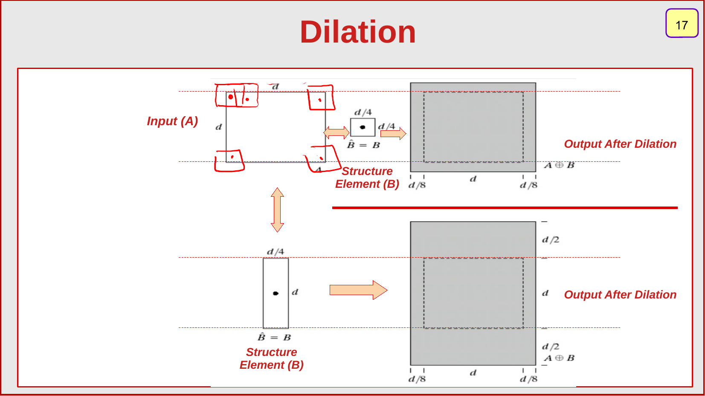
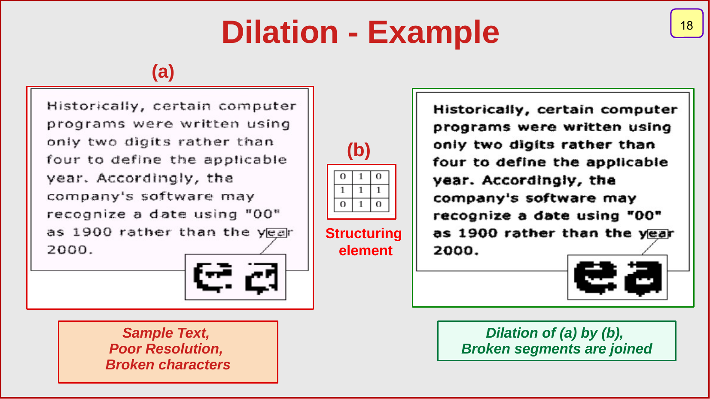
Worked example — dilate a 6×6 toy grid by a 3×3 cross SE (origin at centre)
Input $A$ (1 = foreground, 0 = background):
0 0 0 0 0 0 0 0 1 0 0 0 0 1 1 1 0 0 0 0 1 0 0 0 0 0 0 0 0 0 0 0 0 0 0 0
SE $B$ (3×3 plus, origin at centre — symmetric, so $\hat B = B$):
0 1 0 1 1 1 0 1 0
For every pixel $z$, mark it 1 if the cross centred at $z$ hits at least one 1 of $A$. Every original foreground pixel stays 1, plus its 4-neighbours light up:
0 0 1 0 0 0 0 1 1 1 0 0 1 1 1 1 1 0 0 1 1 1 0 0 0 0 1 0 0 0 0 0 0 0 0 0
The 4-pixel cross became a 13-pixel "diamond" — dilation visibly grew the foreground.
Mini application — edge detection by dilation: dilate $A$, then subtract the original. The new pixels are exactly the one-pixel-thick boundary.
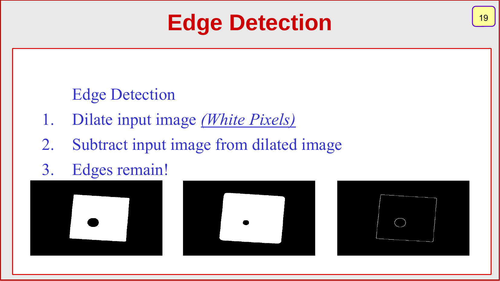
Answer
A 3×3 block of foreground pixels centred at the original pixel.Common exam traps
- Forgetting the reflection $\hat B$. If $B$ is symmetric (square, disc, plus) you can ignore it, but for an asymmetric SE the output flips.
- The SE must contain only 1s for dilation/erosion. The "don't-care" SE entries appear only in hit-or-miss.
- Saying "dilation always makes the object bigger by one pixel" — no, it grows by the radius of the SE on every side.
Erosion — "where does the SE fit inside the foreground?"
Why it matters: erosion shrinks shapes — removes small noise islands, thins thick strokes, separates touching objects.
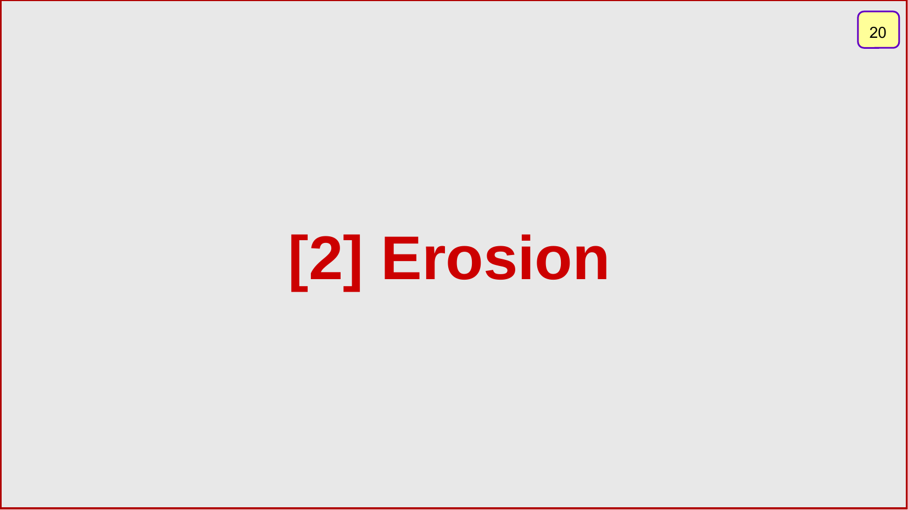
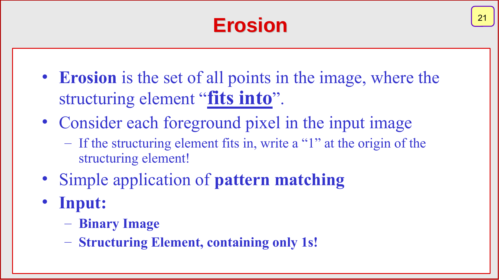
Plain English: place the SE at every pixel $z$; mark $z$ foreground in the output only if the entire SE lies inside $A$.
Formula:
$$A\ominus B=\{\,z\;\mid\;(B)_z\subseteq A\,\}$$
Symbols: $(B)_z$ = the SE translated so its origin is at $z$. $\subseteq$ = "is a subset of". So $z$ is in the eroded set only when every 1 of the SE, after shifting it to $z$, lands on a 1 of $A$.
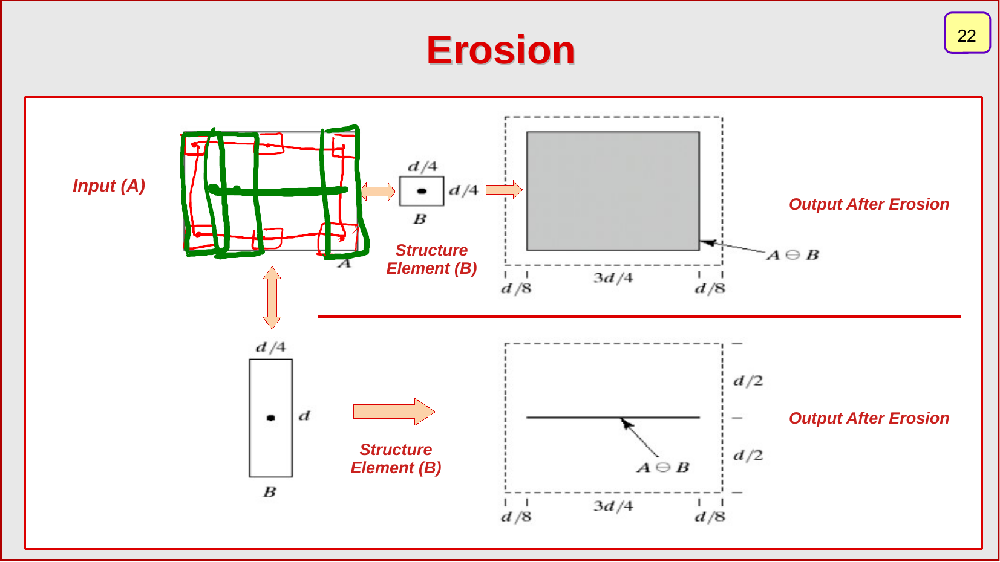
Worked example — erode a 6×6 toy grid by a 3×3 all-ones SE (origin at centre)
Input $A$:
0 0 0 0 0 0 0 1 1 1 1 0 0 1 1 1 1 0 0 1 1 1 1 0 0 1 1 1 1 0 0 0 0 0 0 0
SE $B$ = 3×3 all-ones, origin at centre.
At every pixel $z$, ask "does a 3×3 block of 1s fit inside $A$ centred at $z$?" Only the four interior pixels of the 4×4 block qualify:
0 0 0 0 0 0 0 0 0 0 0 0 0 0 1 1 0 0 0 0 1 1 0 0 0 0 0 0 0 0 0 0 0 0 0 0
The 4×4 block eroded to a 2×2 block — every side lost one pixel, the radius of the SE.
Mini application — counting touching coins (slides 23–24): the coins touch in the binarised image, so connected-component counting gives the wrong answer. Erode with a disc of radius slightly less than half a coin: each coin shrinks to a separate blob while the thin "bridges" between coins vanish.
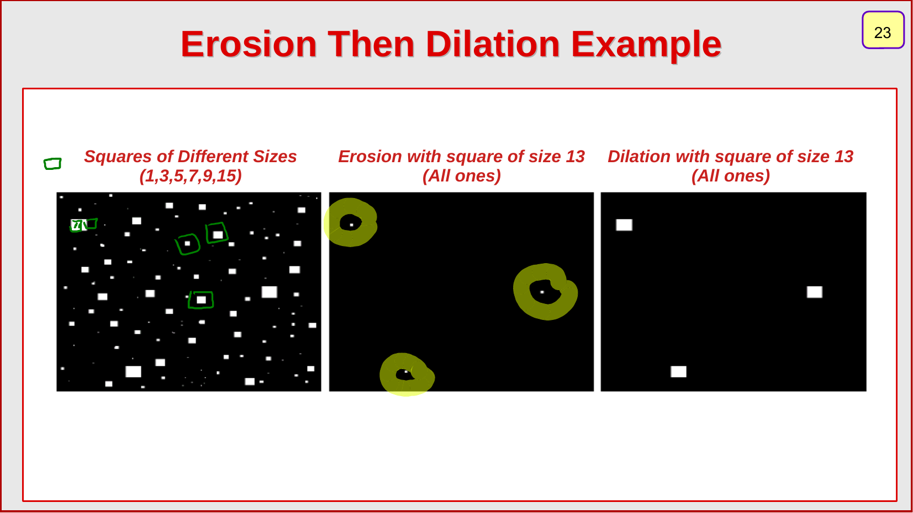
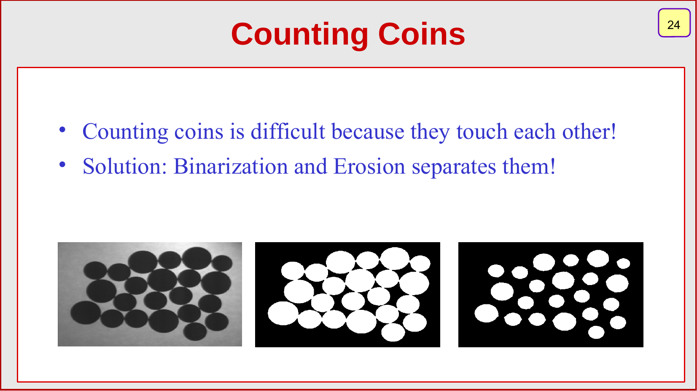
Answer
3×3. Each side loses one pixel (the radius of the SE).Duality between dilation and erosion
Why it matters: this single identity tells you that any algorithm written in terms of dilation can be rewritten in terms of erosion (and vice-versa) by complementing and reflecting. Several proofs and exam manipulations turn on this fact.
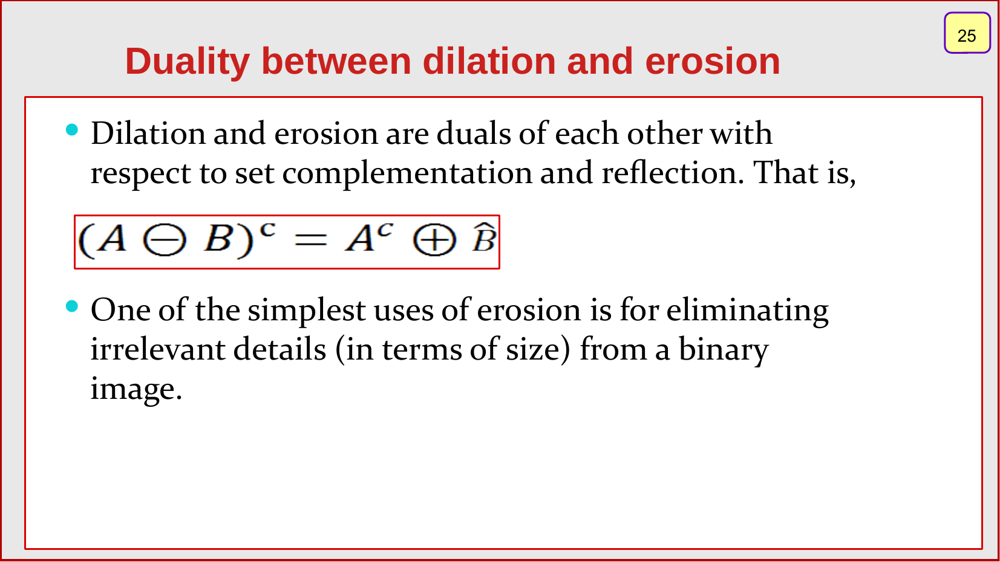
$$(A\ominus B)^c = A^c\oplus\hat B$$
Read it as: eroding the foreground is the same as dilating the background, then flipping foreground and background again. One of erosion's simplest uses is to eliminate irrelevant small details from a binary image — anything smaller than the SE disappears.
Trap
- The duality has a reflection $\hat B$ in it. If $B$ is asymmetric, you cannot just swap $\oplus$ and $\ominus$.
s3.3 — Opening and Closing
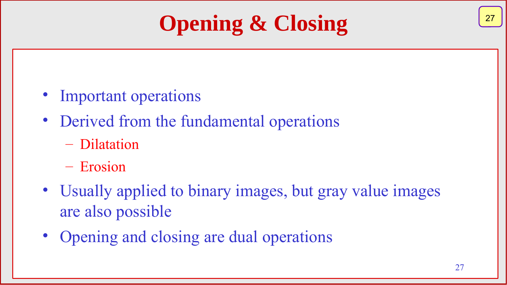
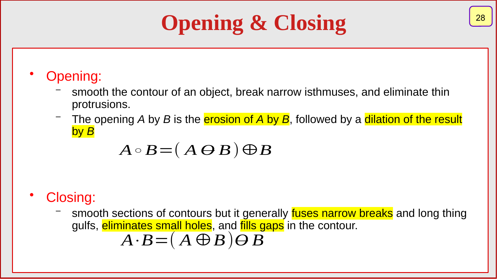
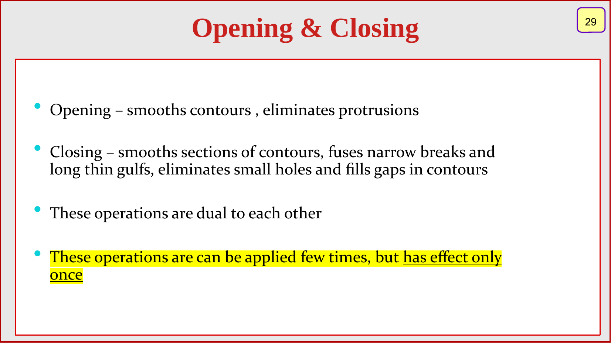
Opening $A\circ B = (A\ominus B)\oplus B$
Why it matters: opening is the workhorse for denoising binary images: salt noise (small foreground islands smaller than the SE) is wiped out; thin protrusions are removed; the overall shape is smoothed without much change to area.
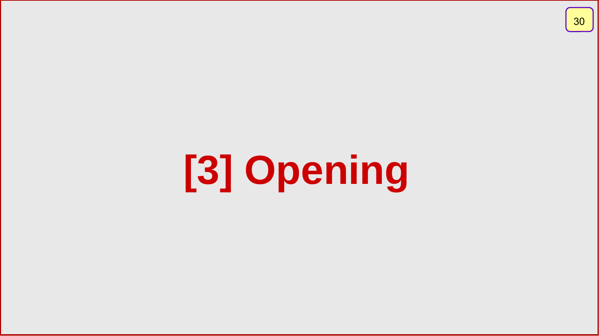
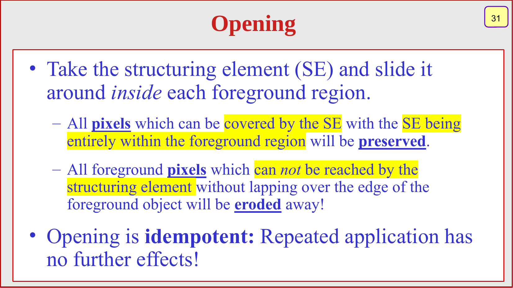
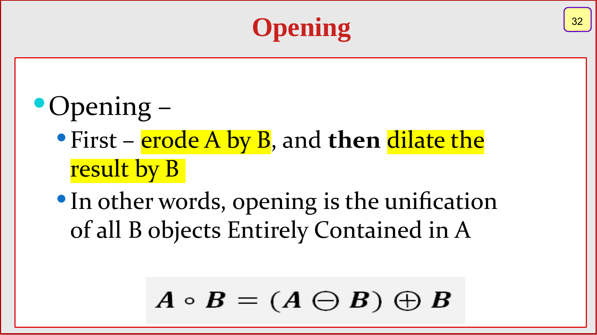
Plain English: "Erode away the small stuff (kills islands smaller than $B$, thins protrusions), then dilate back so the surviving shapes return roughly to their original size." Geometrically: roll $B$ around inside $A$; the opening is the set swept out by the body of $B$.
Formula:
$$A\circ B=(A\ominus B)\oplus B$$
Equivalently, opening is the union of all translates of $B$ contained in $A$: $A\circ B = \bigcup\{(B)_z\mid (B)_z\subseteq A\}$.
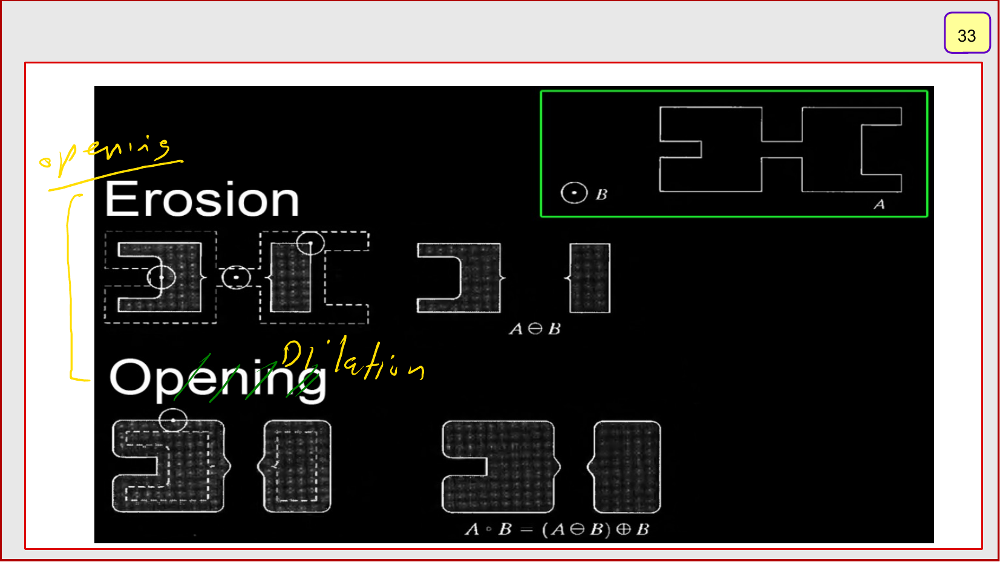
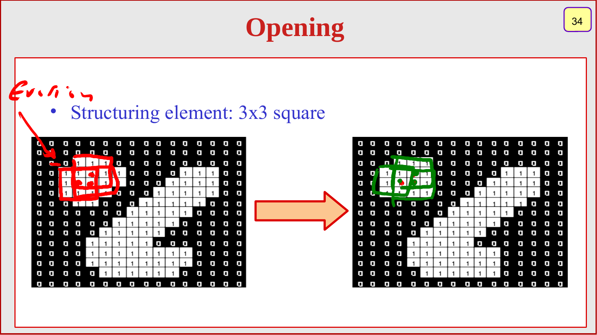
Worked example — open a 6×6 toy grid by a 3×3 all-ones SE
Input $A$ — a thick blob with a hair-like 1-pixel-wide protrusion at the top:
0 0 1 0 0 0 0 1 1 1 1 0 0 1 1 1 1 0 0 1 1 1 1 0 0 1 1 1 1 0 0 0 0 0 0 0
Step 1 — Erode by 3×3 all-ones (the 1-pixel hair has no room for a 3×3 to fit, so it vanishes; only interior pixels of the 4×4 block survive):
0 0 0 0 0 0 0 0 0 0 0 0 0 0 1 1 0 0 0 0 1 1 0 0 0 0 0 0 0 0 0 0 0 0 0 0
Step 2 — Dilate the eroded result by 3×3 all-ones (each surviving pixel grows back to a 3×3 block; together they reconstruct a 4×4 square):
0 0 0 0 0 0 0 1 1 1 1 0 0 1 1 1 1 0 0 1 1 1 1 0 0 1 1 1 1 0 0 0 0 0 0 0
Effect: the thin hair was destroyed; the body of the blob was preserved. That is opening.
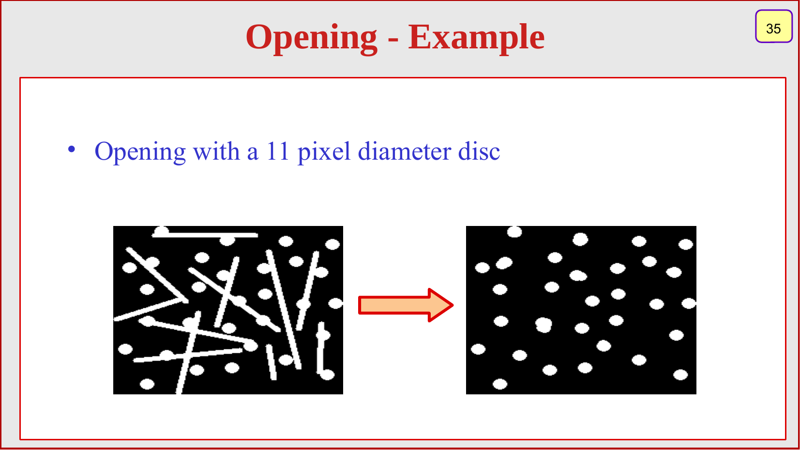
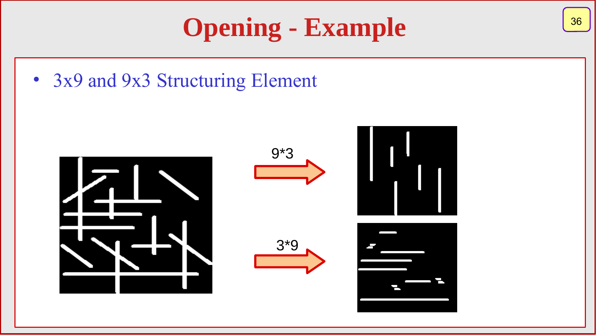
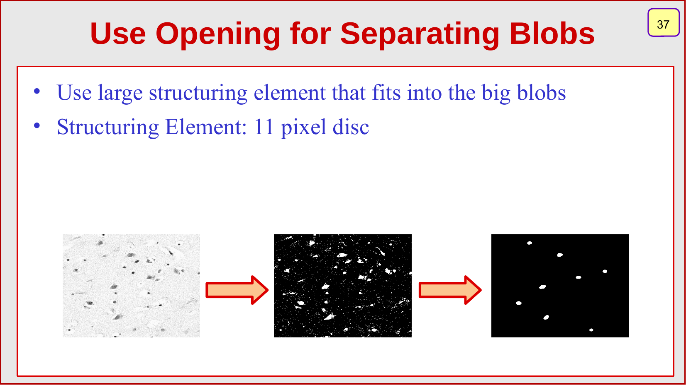
Properties of opening you must memorise
- Smooths the contour from the inside, breaks narrow isthmuses, eliminates thin protrusions and small foreground islands.
- Anti-extensive: $A\circ B\subseteq A$ — opening can only remove pixels, never add them.
- Idempotent: $(A\circ B)\circ B = A\circ B$. Repeated application has no further effect.
- Increasing (monotone): $A_1\subseteq A_2 \Rightarrow A_1\circ B \subseteq A_2\circ B$.
Closing $A\bullet B = (A\oplus B)\ominus B$
Why it matters: closing is the dual of opening — it kills pepper noise inside the foreground (small holes), fuses thin gaps between blobs, smooths the contour from the outside.
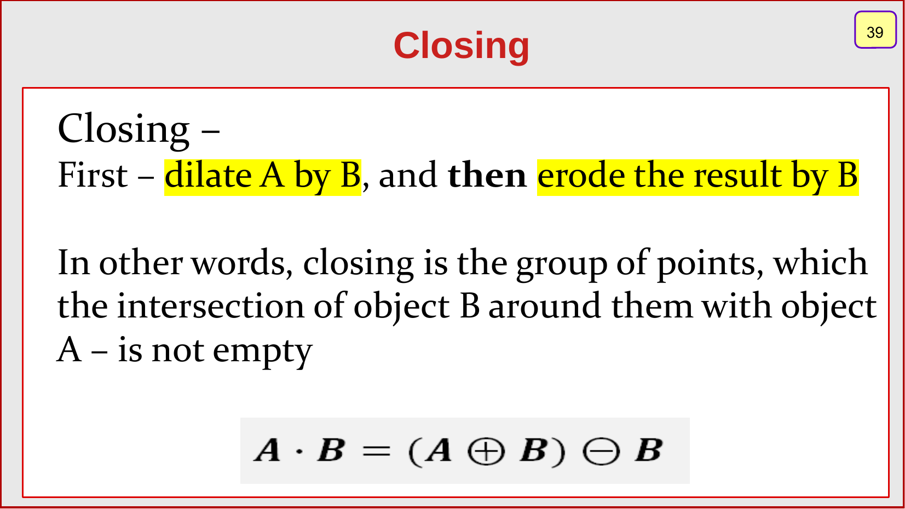
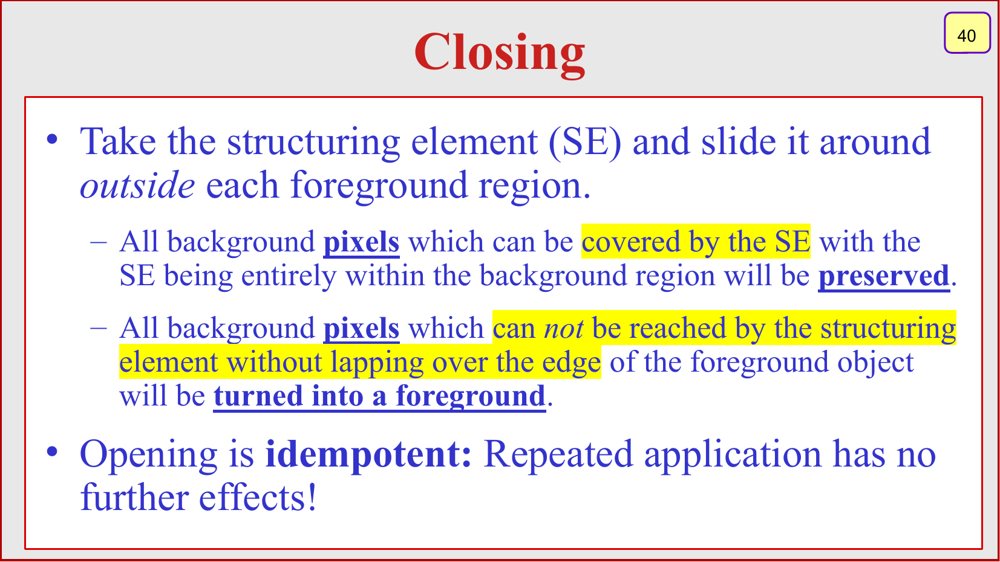
Plain English: "Dilate to fill the small holes and gaps, then erode back so the body of the shape doesn't get permanently fatter." Geometrically: roll $B$ around the outside of $A$; the closing is the complement of the region the body of $B$ sweeps out.
Formula:
$$A\bullet B = (A\oplus B)\ominus B$$
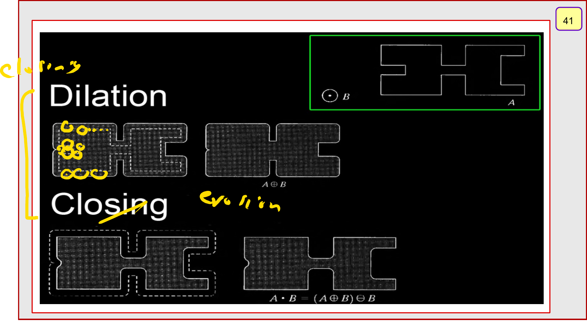
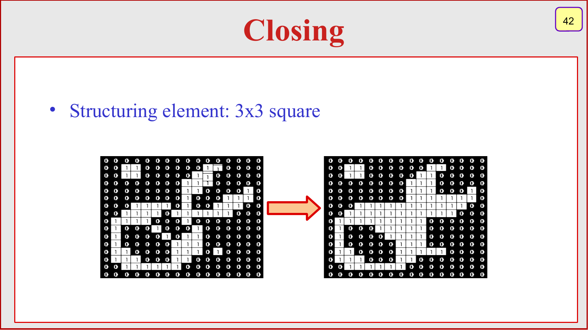
Worked example — close a 6×6 toy grid (a hole inside a 5×5 block) by a 3×3 all-ones SE
Input $A$ — a 5×5 block with a 1-pixel hole in the middle:
0 0 0 0 0 0 0 1 1 1 1 1 0 1 1 1 1 1 0 1 1 0 1 1 0 1 1 1 1 1 0 1 1 1 1 1
Step 1 — Dilate by 3×3 (the hole gets covered because every neighbour around it is 1, and the block grows outward by one pixel on every side):
1 1 1 1 1 1 1 1 1 1 1 1 1 1 1 1 1 1 1 1 1 1 1 1 1 1 1 1 1 1 1 1 1 1 1 1
Step 2 — Erode by 3×3 (the block shrinks back; the hole is gone, so erosion does not re-open it):
0 0 0 0 0 0 0 1 1 1 1 1 0 1 1 1 1 1 0 1 1 1 1 1 0 1 1 1 1 1 0 1 1 1 1 1
Effect: the hole was filled; the outline of the block is the same as the input. That is closing.
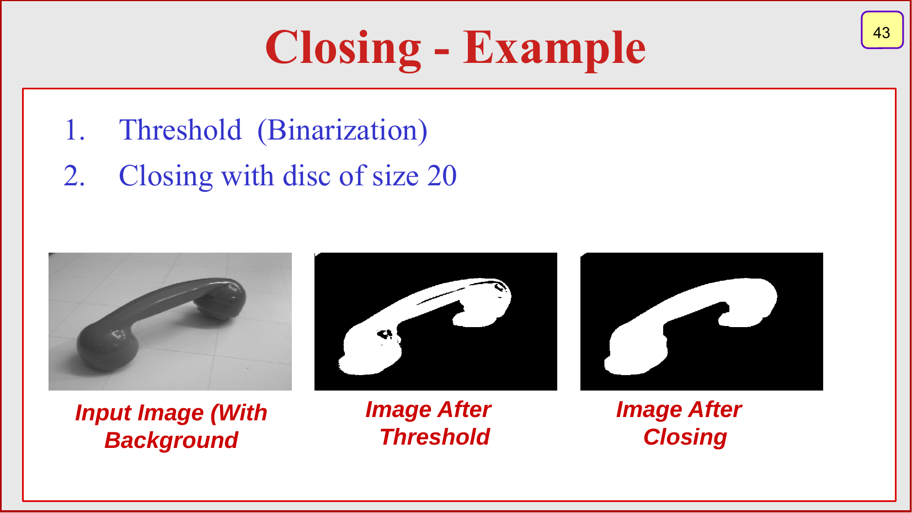
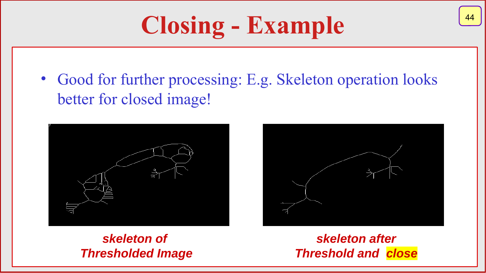
Properties of closing you must memorise
- Smooths the contour from the outside, fuses narrow breaks, fills long thin gulfs, eliminates small holes, fills small gaps.
- Extensive: $A\subseteq A\bullet B$ — closing can only add pixels, never remove them.
- Idempotent: $(A\bullet B)\bullet B = A\bullet B$.
- Duality with opening: opening the foreground with $B$ is equivalent to closing the background with $B$. Formally $(A\bullet B)^c = A^c\circ\hat B$.
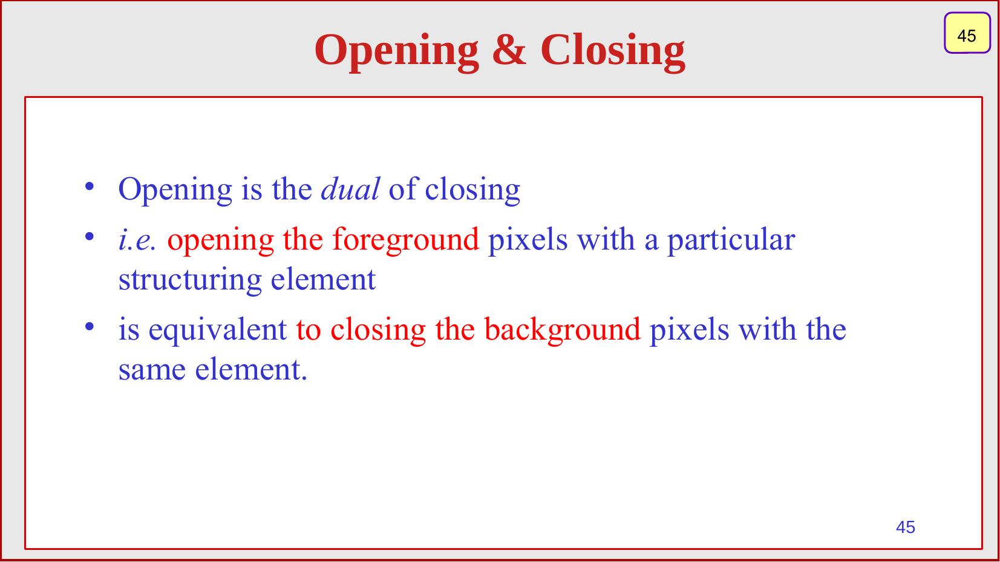
Common exam traps
- "Opening adds pixels" — false. Opening is anti-extensive ($A\circ B\subseteq A$). Closing is the extensive one.
- "Closing removes small islands" — false. Closing removes small holes; opening removes small islands.
- "Repeated opening keeps shrinking the shape" — false. Opening is idempotent: a single pass already gives the final answer.
- Mixing up the order. Opening = erode then dilate. Closing = dilate then erode. Remember: opening "opens up" (erodes first to break thin connections); closing "closes up" (dilates first to fill gaps).
Answer
d) Closing — black dots inside white = small holes, which closing fills.Answer
c) Opening — white specks = small foreground islands, opening kills them; subsequent dilation restores the surviving large objects to roughly their original size.s3.4 — Hit-or-Miss transform & derivatives
Once we have dilation, erosion, opening, and closing, every other classical morphological algorithm in this lecture is just a clever combination of those four primitives plus set operations. We start with the hit-or-miss transform, which is itself a pattern detector, and then build the rest of the toolkit on top of it.
The Hit-or-Miss transform $A\circledast B$ — shape detection
Why it matters: hit-or-miss is the textbook pattern detector. It is the morphological analogue of template matching, and it is the basis of corner detection, end-point detection, thinning, thickening, and pruning.
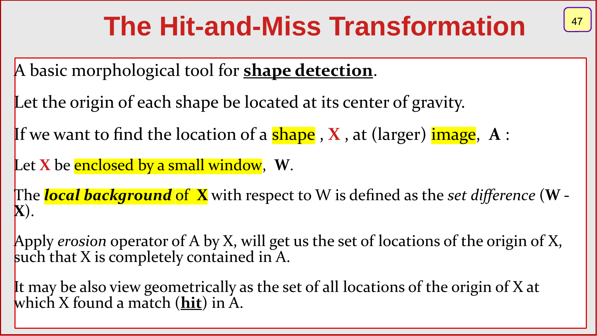
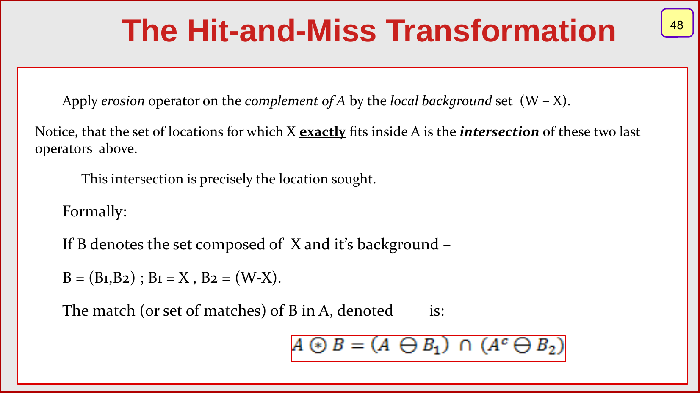
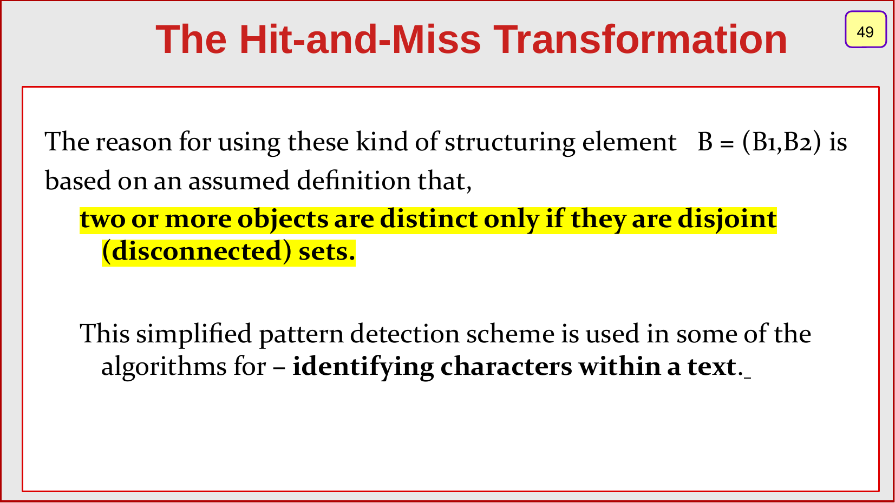
Plain English: the SE is now a pair: $B_1$ says "these pixels must be foreground" and $B_2$ says "these pixels must be background". Hit-or-miss returns the set of locations where both constraints are satisfied simultaneously.
Formula:
$$A\circledast B = (A\ominus B_1)\;\cap\;(A^c\ominus B_2)$$
Symbols: $A$ = image. $A^c$ = its complement (background). $B_1$ = the "foreground" template (the shape we want to find). $B_2$ = the "background" template (the local background of the shape — the pixels that must not belong to the foreground). $\ominus$ = erosion. $\cap$ = set intersection. $\circledast$ = "hit-or-miss" operator (some books write $\otimes$).
An equivalent form (slide 79): $A\circledast B = (A\ominus B_1) - (A\oplus\hat B_2)$.
Step-by-step recipe (slides 50–56):
- Pick the shape $X$ you want to find. Enclose it in a small window $W$. Compute the local background $W-X$.
- Erode $A$ by $B_1=X$. The result is the set of locations where $X$ fits inside the foreground.
- Erode $A^c$ by $B_2=W-X$. The result is the set of locations where the local background fits inside the actual background.
- Intersect the two. Survivors are precisely the locations where $X$ is "surrounded by predefined border size" inside $A$.
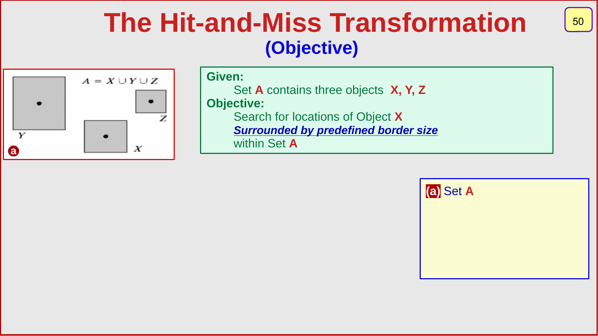
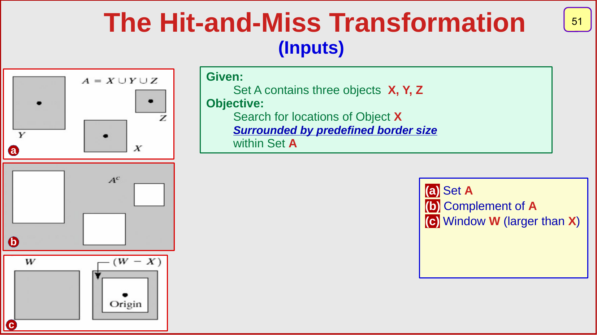
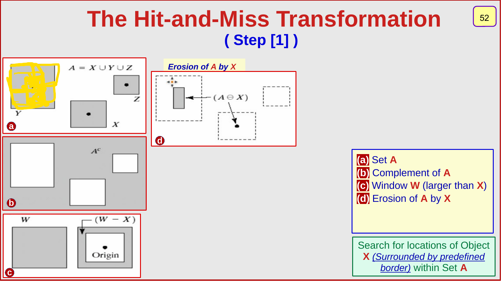
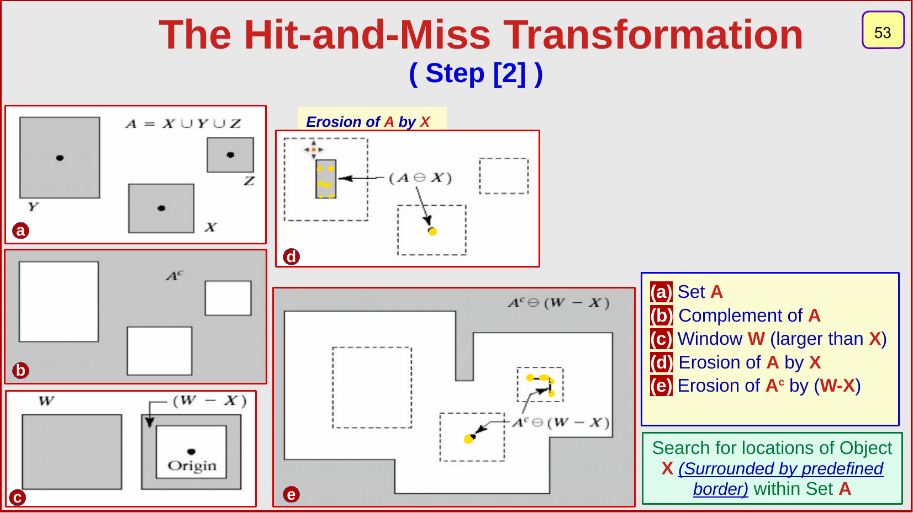
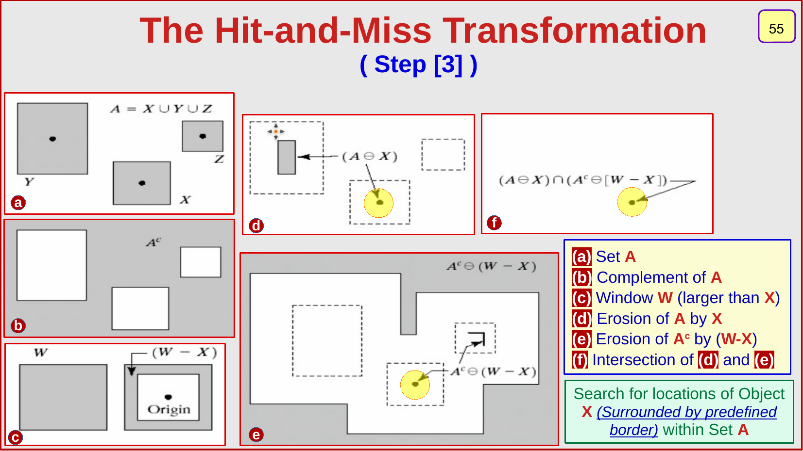
Worked example — apply a hit-or-miss SE for an isolated foreground pixel
Goal: find every isolated 1 (a foreground pixel completely surrounded by background).
SE: $B_1$ = single "1" at the centre. $B_2$ = ring of "1"s around the centre. (Image: 3×3 with centre=1 in $B_1$ and the eight neighbours=1 in $B_2$, centre of $B_2$ = don't care.)
For an isolated pixel:
0 0 0 0 1 0 0 0 0
$B_1$ erosion: centre pixel survives (1 fits 1). $B_2$ erosion of the background: the ring of 0s around the centre fits the actual background. Intersection → centre pixel survives → match!
For a thick blob, the ring of 0s does not fit (those neighbours are 1, not 0), so no match — correctly, the blob is not "isolated".
Corner detection via Hit-or-Miss
Why it matters: the simplest non-trivial application of hit-or-miss — one SE per corner orientation, OR the results.
Algorithm: $\text{Corners}(A) = \bigcup_{i=1}^{4}(A\circledast B^i)$ where $B^1,\dots,B^4$ are the four corner SEs.
[1] Counting coins (reprise) — erosion separates touching blobs
Pipeline: greyscale → threshold → erode with a disc of radius slightly under half a coin → connected-component count.
[2] Edge detection — dilation minus original
Why it matters: a one-line, fast, branchless edge detector for binary images.
$\text{Edges}(A) = (A\oplus B) - A$.
[3] Fingerprint enhancement — opening then closing
Recipe: $(A\circ B)\bullet B$. The opening first kills inter-ridge noise; the closing then heals small breaks inside ridges.
[4] Boundary extraction $\beta(A)$
Why it matters: one of the four morphological primitives every CV student must know by name — used for silhouette extraction, contour-based shape descriptors, and a stepping stone to skeletonisation.
Plain English: erode $A$ by $B$; the eroded set is $A$ with its boundary shaved off. Subtract that from $A$ and what is left is exactly the boundary.
Formula:
$$\beta(A) = A - (A\ominus B)$$
The thickness of the extracted boundary equals the radius of $B$. For a one-pixel-thick boundary, use a 3×3 all-ones SE.
Worked example — extract the boundary of a 6×6 5×5 block
0 0 0 0 0 0 0 0 0 0 0 0 0 0 0 0 0 0
0 1 1 1 1 1 0 0 0 0 0 0 0 1 1 1 1 1
0 1 1 1 1 1 - 0 0 1 1 1 1 = 0 1 0 0 0 0
0 1 1 1 1 1 0 0 1 1 1 1 0 1 0 0 0 0
0 1 1 1 1 1 0 0 1 1 1 1 0 1 0 0 0 0
0 1 1 1 1 1 0 0 1 1 1 1 0 1 0 0 0 0
A A erode B beta(A)
The boundary is just the leftmost column and the top row of the block — the part of $A$ that did not survive erosion.
[5] Region filling — iterated conditional dilation
Why it matters: paint-bucket fills, hole filling in masks, flood fill — they are all this single recursion.
Plain English: start at a seed pixel $p$ inside the region you want to fill. At every step, dilate the current set by $B$ — but mask the result against the background $A^c$ so the dilation cannot cross the boundary $A$. Iterate until nothing changes. Finally OR with $A$ to get the filled region.
Formula:
$$X_k = (X_{k-1}\oplus B)\;\cap\;A^c,\quad X_0=p,\quad k=1,2,3,\dots$$
Convergence: stop when $X_k=X_{k-1}$. Final filled region: $X_k\cup A$.
Trap
- The intersection with $A^c$ is what stops the dilation at the boundary. Forgetting it lets the dilation grow forever.
- The boundary $A$ must be closed (no gaps), otherwise the fill leaks out.
[6] Extraction of connected components
Why it matters: object counting, blob analysis, segmentation — pick a seed inside an object, grow it until you have the whole object.
Formula:
$$X_k = (X_{k-1}\oplus B)\;\cap\;A,\quad X_0=p,\quad k=1,2,3,\dots$$
Notice the contrast with region filling: there we intersected with $A^c$ (we wanted to fill the background-inside-the-boundary); here we intersect with $A$ itself (we want to grow within the foreground). Convergence: $X_k=X_{k-1}$.
[7] Thinning $A\otimes B$
Why it matters: after edge detection, "edges" are often two-pixel-thick. Thinning shaves them to one pixel — required by skeleton-based shape descriptors, OCR, and biometric analysis.
Plain English: wherever the hit-or-miss SE matches, remove that pixel from $A$. Apply a sequence of rotated SEs (typically 8: alternating corner-detectors and edge-detectors) cyclically until nothing changes.
Formula:
$$A\otimes B = A - (A\circledast B) = A\cap(A\circledast B)^c$$
$$A\otimes\{B\} = ((\dots((A\otimes B^1)\otimes B^2)\dots)\otimes B^n),\quad \{B\}=\{B^1,\dots,B^n\}$$
Reference: thickening, skeleton, pruning, convex hull
Why it matters: these are the "named theorems" of morphology — every CV final has at least one definition question pulled from this table.
Thickening:
$$A\odot B = A\cup(A\circledast B)$$
The dual of thinning — wherever the hit-or-miss SE matches, add that pixel. Useful to fatten a skeleton or to grow a region.
Skeleton $S(A)$:
$$S(A) = \bigcup_{k=0}^{K} S_k(A),\qquad S_k(A)=\bigcup_{k=0}^{K}\Big\{(A\ominus kB) - \big[(A\ominus kB)\circ B\big]\Big\}$$
Symbols: $kB$ = the SE $B$ dilated by itself $k$ times (so $kB$ is a larger SE). $K$ = the smallest integer such that further erosion makes $A$ vanish. The skeleton is the union of the "skeleton subsets" $S_k$: at every scale $k$, take the difference between the $k$-erosion and the opening of the $k$-erosion. Reconstruction: $A=\bigcup_k(S_k(A)\oplus kB)$ — the skeleton plus the scale information lets us rebuild $A$ exactly.
Pruning (removes parasitic skeleton branches):
$$X_1=A\otimes\{B\},\quad X_2=\bigcup_{k=1}^{8}(X_1\circledast B^k),\quad X_3=(X_2\oplus H)\cap A,\quad X_4=X_1\cup X_3$$
$X_1$ is the thinned skeleton, $X_2$ collects the endpoints, $X_3$ conditionally dilates the endpoints back inside $A$, and $X_4$ unions everything to restore the main skeleton without the spurs.
Convex hull (slide 79):
$$X_k^i = (X_{k-1}^i\circledast B^i)\cup A,\quad X_0^i=A,\quad i=1,2,3,4$$
Iterate four rotated SEs until convergence ($X_k^i=X_{k-1}^i$); union the four limits to get the convex hull $C(A)$.
Common exam traps
- Hit-or-miss SE has 0s, 1s, and "don't-cares"; dilation/erosion SE has only 1s. Don't mix them.
- Region filling uses $\cap A^c$ (mask by background); connected-component extraction uses $\cap A$ (mask by foreground). Same recursion, opposite mask.
- Skeleton is not the same as thinning. Thinning is one of several ways to compute a skeleton; the textbook skeleton $S(A)$ is the union of $S_k(A)$'s above.
- "All other morphological operations can be derived from hit-or-miss" — true in principle, but in practice we usually express thinning, thickening, pruning, corner-detection in terms of hit-or-miss, and dilation/erosion remain primitive.
Practice quiz — Lecture 3
Answer
b). Option (a) is the definition of erosion; (c) and (d) are plain set operations.Answer
False. Opening is anti-extensive: $A\circ B\subseteq A$. The extensive operator is closing: $A\subseteq A\bullet B$.Answer
True — the duality between erosion and dilation.Answer
$\beta(A)=A-(A\ominus B)$. The boundary thickness is set by the size (radius) of the structuring element $B$.Answer
Because applying it twice gives the same result as applying it once: $(A\circ B)\circ B = A\circ B$. After the first opening, every surviving foreground pixel is already coverable by $B$ entirely within $A$, so a second pass changes nothing.Answer
(i) Opening with a small SE (say 3×3) — removes the small white speckles in the background (anti-extensive, kills small islands). (ii) Closing with an SE just larger than the typical gap (~5×5) — fuses the small breaks in the road (extensive, fills small holes/gaps). The order matters: do opening first to remove noise so that closing does not fuse a spurious speckle to the road.0 0 0 0 0 0 0 1 1 1 1 0 0 1 1 1 1 0 0 1 1 1 1 0 0 1 1 1 1 0 0 0 0 0 0 0
Answer
0 0 0 0 0 0 0 0 0 0 0 0 0 0 1 1 0 0 0 0 1 1 0 0 0 0 0 0 0 0 0 0 0 0 0 0The 4×4 block shrinks to a 2×2 block — every side loses one pixel (the SE radius). Only pixels with all eight 3×3 neighbours equal to 1 survive.
0 0 0 0 0 0 0 0 0 0 0 0 0 0 1 0 0 0 0 0 0 0 0 0 0 0 0 0 0 0 0 0 0 0 0 0
Answer
0 0 0 0 0 0 0 0 1 0 0 0 0 1 1 1 0 0 0 0 1 0 0 0 0 0 0 0 0 0 0 0 0 0 0 0A single foreground pixel dilated by a cross SE becomes a 5-pixel cross — the SE itself reproduced at the position of the original pixel.
b) $A\circledast B=(A\oplus B_1)\cap(A^c\oplus B_2)$
c) $A\circledast B=(A\ominus B_1)\cup(A^c\ominus B_2)$
d) $A\circledast B=(A\oplus B_1)\cup(A^c\oplus B_2)$